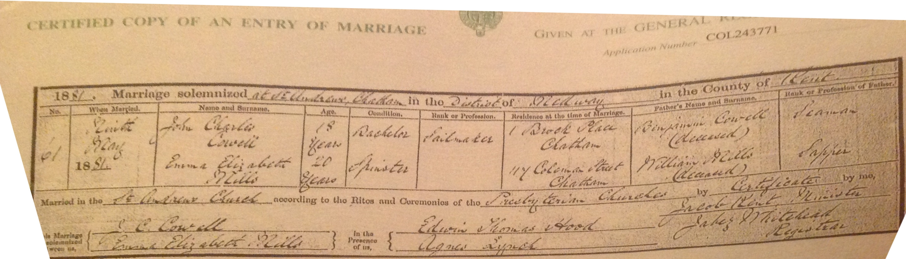

Emma Elizabeth Cowell (née Mills) 1861 - c1933
[ Home ] | [ Calendar ] | [ Surnames Index ] | [ Errors ] | [ Family History ]Emma Mills, the wife of John Charles Cowell (the second cousin three-times-removed on the mother's side of Nigel Horne), was born in Chatham, Kent, England in 18611,2 and married John (a police constable with whom she had 4 children: John Francis, Sydney James Henry, Lillian Eleanor and Bertie Charles) in Chatham on 9 May 18814.
During her life, she was living at 71 Victoria Road, Willesden, London, England on 5 Apr 18911; and at 28 Claremont Road, Kilburn, London on 31 Mar 19012, on 2 Apr 19115 and on 19 Jun 19216.
She died c. Nov 1933 in Willesden3.
Children
- John Francis was born on 16 Sept 1881
- Sydney James Henry was born on 6 Feb 1884
- Lillian Eleanor was born on 18 Apr 1886
- Bertie Charles was born on 5 Mar 1888
Citations
- 1891 England, Wales & Scotland Census - Findmypast (was age 30 and the wife of the head of the household)
- 1901 England, Wales & Scotland Census - Findmypast (was age 40 and the wife of the head of the household)
- England & Wales deaths 1837-2007 - Findmypast
- England & Wales marriages 1837-2008 - Findmypast
- 1911 Census for England & Wales - Findmypast (was age 50 and the wife of the head of the household)
- 1921 Census Of England & Wales - Findmypast (was age 60 and the wife of the head of the household)
Media
John Cowell - Emma Mills - marriage certificate

1911 Census for England & Wales - GBC/1911/RG14/06995/0873/2
England & Wales deaths 1837-2007 - BMD/D/1933/4/AZ/000190/037
Family Tree

Map
Generated by ged2site. Last updated on Jul 3, 2024
Known Issues
No records of living with anyone